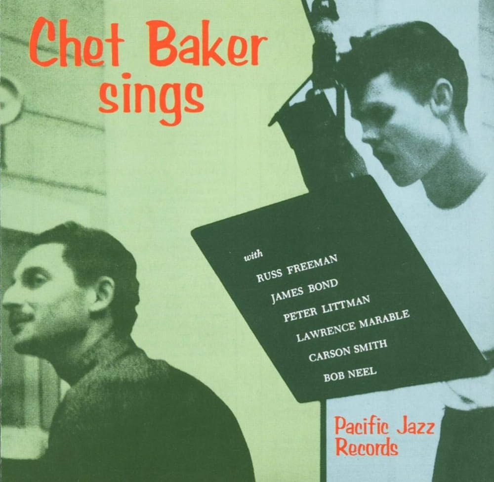

Supreme Blientele
In my opinion nobody does it like Westside Gunn. The way he combines humor, serious themes and ethereal
production gives my brain the right itch.
Favorite song: Elizabeth
Rubber Soul

100% my favorite Beatles album. This is the last "simple" album before their experimental phase. I
just love how ordinary this album is even though I appreciate everything that came after.
Favorite Song: Michelle
Alfredo 2

Best rap album of 2025 IMO. Alchemist + SpreadieGibbs never misses and there's not a single miss on the
entire album.
Favorite Song: Mar-a-Lago
Chet Baker Sings
This is easily the album I've listened to the most. The defintion of "Old but gold". I love Chet Baker's
voice and his music is perfect for work sessions.
Favorite Song: Time After Time